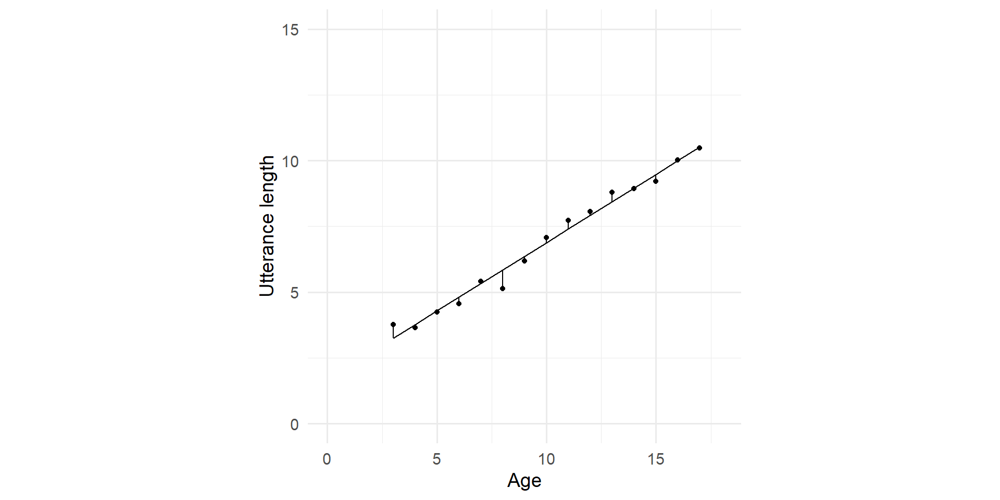

library(ggplot2)
library(tibble)
set.seed(2022)
utt_lengths <- tibble(
age = 3:17,
utterance_length = 3 + 0.5*seq_along(age) + rnorm(length(age), sd = 0.8)
)
m <- lm(utterance_length ~ age, data = utt_lengths)
utt_lengths$fit <- m$fitted.values
g <- ggplot(utt_lengths, aes(x = age, y = utterance_length)) +
labs(x = "Age", y = "Utterance length") +
xlim(c(0,18)) + ylim(c(0,15)) +
theme_minimal(base_size = 14) + theme(aspect.ratio = 1)Regression analysis
Linear and logistic regression
| Linear regression | Logistic regression | |
|---|---|---|
| Response variable | Numerical | Categorical |
| Relationship between predictor estimate and response | Linear | Logistic (linear relationship between estimate and log odds of response) |
| Fitting function | OSL (ordinary least squares) | MLE (maximum likelihood estimation) |
| Model comparison | F-test | AIC |
| Evaluation metric | \(R^2\) | \(C\) |
| Base R function | lm() |
glm() |
Simple linear regression
Simple linear regression
- Simple
-
one predictor variable
- Linear
-
linear relation between estimated parameters and response variable
- Notation
-
y ~ x - Estimation: OSL
-
Ordinary least squares, minimizing sum of squares of residuals
Example
Plotted values

Adding fitted line
Residuals
Model output
Call:
lm(formula = utterance_length ~ age, data = utt_lengths)
Residuals:
Min 1Q Median 3Q Max
-1.91258 -0.40949 -0.04272 0.46447 1.38014
Coefficients:
Estimate Std. Error t value Pr(>|t|)
(Intercept) 1.18871 0.54280 2.19 0.0474 *
age 0.55042 0.04983 11.05 5.61e-08 ***
---
Signif. codes: 0 '***' 0.001 '**' 0.01 '*' 0.05 '.' 0.1 ' ' 1
Residual standard error: 0.8338 on 13 degrees of freedom
Multiple R-squared: 0.9037, Adjusted R-squared: 0.8963
F-statistic: 122 on 1 and 13 DF, p-value: 5.605e-08Easy stats
Quick reports in text
We fitted a linear model (estimated using OLS) to predict utterance_length with age (formula: utterance_length ~ age). The model explains a statistically significant and substantial proportion of variance (R2 = 0.90, F(1, 13) = 122.02, p < .001, adj. R2 = 0.90). The model's intercept, corresponding to age = 0, is at 1.19 (95% CI [0.02, 2.36], t(13) = 2.19, p = 0.047). Within this model:
- The effect of age is statistically significant and positive (beta = 0.55, 95% CI [0.44, 0.66], t(13) = 11.05, p < .001; Std. beta = 0.95, 95% CI [0.76, 1.14])
Standardized parameters were obtained by fitting the model on a standardized version of the dataset. 95% Confidence Intervals (CIs) and p-values were computed using the Wald approximation.Quickly printing estimates
Parameter | Coefficient | SE | 95% CI | t(13) | p
----------------------------------------------------------------
(Intercept) | 1.19 | 0.54 | [0.02, 2.36] | 2.19 | 0.047
age | 0.55 | 0.05 | [0.44, 0.66] | 11.05 | < .001| Parameter | Coefficient | SE | 95% CI | t(13) | p |
|---|---|---|---|---|---|
| (Intercept) | 1.19 | 0.54 | (0.02, 2.36) | 2.19 | 0.047 |
| age | 0.55 | 0.05 | (0.44, 0.66) | 11.05 | < .001 |
Check and plot assumptions
OK: Error variance appears to be homoscedastic (p = 0.237).
Evaluate model
| AIC | BIC | R2 | R2 (adj.) | RMSE | Sigma |
|---|---|---|---|---|---|
| 40.97 | 43.09 | 0.90 | 0.90 | 0.78 | 0.83 |
Multiple linear regression
Multiple linear regression
- Multiple
-
more than one predictor
- Linear
-
linear relation between estimated parameters and response variable
- Notation
-
y ~ x1 + x2(fitting on a plane) -
y ~ x1 + x2 + ... + xn(fitting on a hyperplane) - Estimation: OSL
-
Ordinary least squares, minimizing sum of squares of residuals
Example
Categorical predictors
Logistic regression
Logistic regression
Logistic regression explains the probability of success (= a certain outcome)
We cannot fit a simple straight line
Probabilities, odds and logit
| Value | Range | Neutral value | Description |
|---|---|---|---|
| probabilities \(P\) |
0-1 | 0.5 | Number of successes divided by number of trials |
| odds \(\frac{P}{1-P}\) |
0-\(\infty\) | 1 | Probability of success divided by the probability of failure. Undefined for \(P=1\) |
| logit, log odds \(\log\left(\frac{P}{1-P}\right)\) |
\(-\infty\)-\(\infty\) | 0 | If positive, success is more likely; if negative failure is more likely. Undefined for \(P=0\) and for \(P=1\) |
Higher \(P\) -> higher odds -> higher logit
Some examples
We’ll create a vector probabilities with the values of fractions from \(\frac{1}{7}\) to \(\frac{1}{2}\) and then from \(1-\frac{1}{3}\) to \(1-\frac{1}{7}\).
MASS::fractions() prints them as fractions.
From there we compute odds and logit.
Some examples
| P | P_frac | odds | odds_frac | logit |
|---|---|---|---|---|
| 0.143 | 1/7 | 0.167 | 1/6 | -1.792 |
| 0.167 | 1/6 | 0.200 | 1/5 | -1.609 |
| 0.200 | 1/5 | 0.250 | 1/4 | -1.386 |
| 0.250 | 1/4 | 0.333 | 1/3 | -1.099 |
| 0.333 | 1/3 | 0.500 | 1/2 | -0.693 |
| 0.500 | 1/2 | 1.000 | 1 | 0.000 |
| 0.667 | 2/3 | 2.000 | 2 | 0.693 |
| 0.750 | 3/4 | 3.000 | 3 | 1.099 |
| 0.800 | 4/5 | 4.000 | 4 | 1.386 |
| 0.833 | 5/6 | 5.000 | 5 | 1.609 |
| 0.857 | 6/7 | 6.000 | 6 | 1.792 |
Probabilities, odds, logit

Linear/logistic
Linear relation logit ~ x entails logistic curve p ~ x.


Linear/logistic
Linear relation logit ~ x entails logistic curve p ~ x.